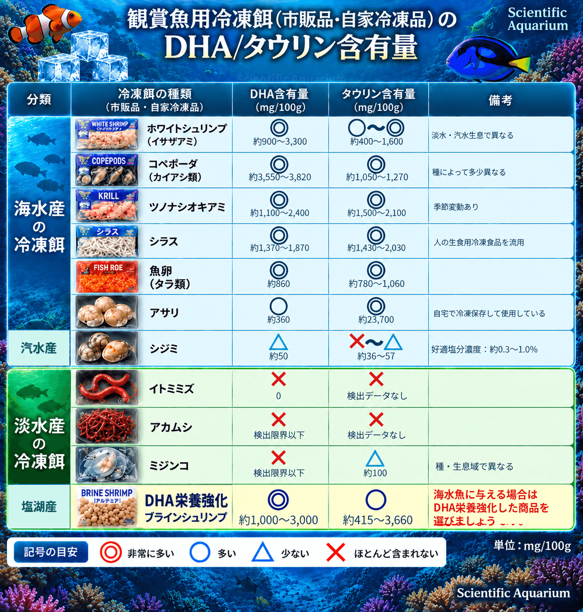
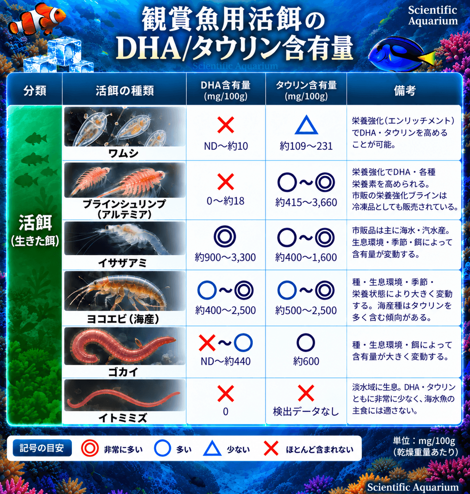
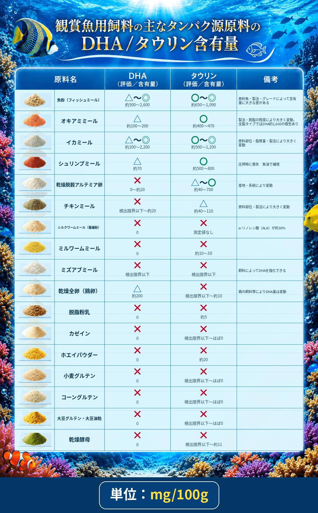
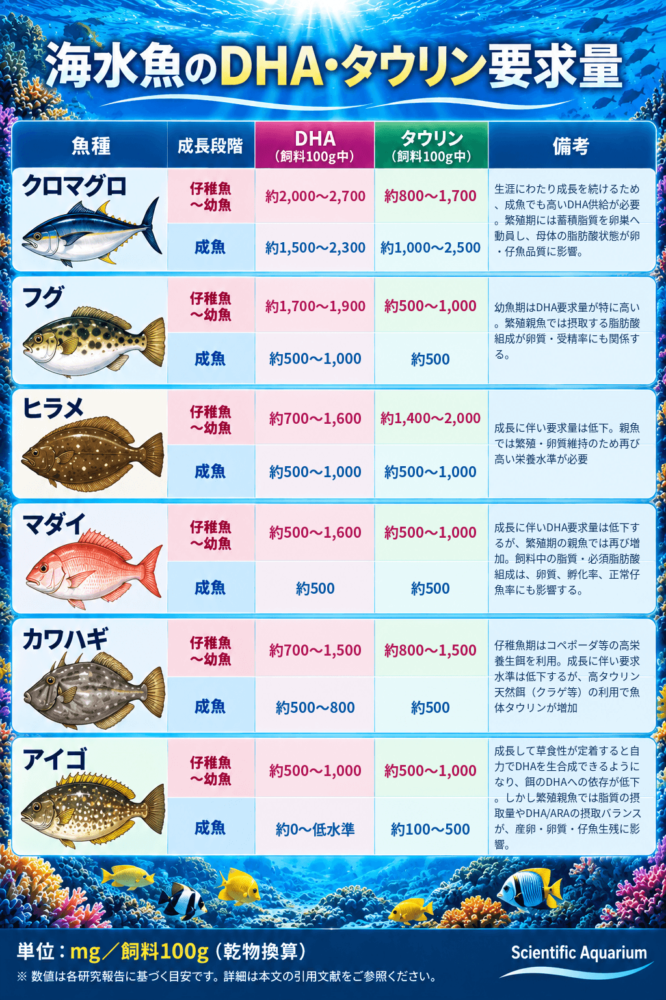

【海水魚の餌】第１１回：
海水魚に淡水魚の餌はＮＧ！
―食べていても起こる「栄養的な飢餓」
Published: 2026.10.01
前回アップしました【海水魚の雑学】第２回：「人工餌は水を汚さない」神話 ― 水産飼料研究が紐解く現実にて、魚類の人工餌開発の歴史を紹介した中で、
人工飼料の開発が始まった約70年前、淡水魚からスタートした魚類の栄養要求の研究。
「淡水魚の常識が、海水魚には通用しなかった」
つまり、淡水魚と海水魚では基本的な必須栄養素や消化能力などに大きな違いがあり、淡水魚の餌をそのまま海水魚に流用することが出来なかったという歴史がある（参考：恒星社厚生閣『養殖の餌と水』）というお話をしたところ、複数の反響を頂きました。
あれ？ そういった情報は一般のアクアリストの方々はどうやって入手しているんだろう？魚類の栄養学では基本中の基本として、教科書に載っているレベルの話なのですが……。
そこで、AIの力を借りてネット上のアクアリウム情報を調査してみたところ、
淡水魚の餌を海水魚の主食にしてはいけない理由を包括的にきちんと説明しているサイトを見つけることは出来ませんでした。要はググっても出てこないのです。出てくる情報は断片的だったり、曖昧だったり……。
更に、淡水魚の餌を海水魚の主食として利用されている方が意外に多いことや、それを推奨している記述さえネット上にあることも分かりました。
70年前、魚類の専門家である研究者たちでさえ「海水魚へ応用すればよいと単純に考えていた」歴史を考えると、無理もありません。
良い機会でもあるので
今回は、淡水魚の餌を海水魚の主食にするのは「なぜマズいのか？」
食べていても「栄養的な飢餓」が起こってしまう原理について
栄養要求や生合成経路・消化能力が「淡水魚」と「海水魚」でどのように異なるのかを交えながら、淡水魚と海水魚の餌、アクアリウムで普及・使用されている冷凍餌・活餌・人工餌の原料まで比較しながら深掘りしていきたいと思います。
まず、淡水魚と海水魚では要求量や生合成経路が異なる代表的な栄養素から見ていきましょう。
１．淡水魚と海水魚で異なる「必須栄養素」
「必須栄養素」とは、生きていくために不可欠であるにもかかわらず、体内で合成・貯蔵できない、または必要量を満たせないため、食べ物から摂取する必要がある栄養素のことをいいます。
ミネラルや多くのビタミンもそれにあたり、「必須アミノ酸」という言葉を聞いたことがある方も多いのではないでしょうか。
今回は、魚類の栄養学でも特に研究が進んでいる、
「淡水魚と海水魚では必須栄養素やその要求量が異なる」ことを示す
代表例として、「DHA」と「タウリン」に絞ってお話していきたいと思います。
■ＤＨＡ／海水魚の必須脂肪酸
海水魚の必須栄養素といえばこれ！と言われるくらい大事なのが、DHA（ドコサヘキサエン酸）です。
オメガ3脂肪酸とも呼ばれる、n-3系の長鎖多価不飽和脂肪酸（LC-PUFA）の一種で、人用の健康食品やサプリでもお馴染みですね。
多くの海水魚では、生きていくために必要なDHAを十分に生合成する能力が欠けているか弱いため、餌から直接摂取する必要があります。
「海に存在するDHAを豊富に含む餌を食べること」を前提に、海水魚たちの代謝システムが構築されているという理解になると思います。
一方、多くの淡水魚は、α-リノレン酸などのC18脂肪酸から、必要なDHAなどの長鎖多価不飽和脂肪酸を体内で生合成する能力を持っています。
ではDHAは、魚の体内でどのような働きをしているのかを見ていきましょう。
最も重要な働きは、細胞膜を形成するための材料になることです。
DHAはリン脂質に組み込まれ、細胞膜を構成する重要な要素となります。細胞膜の柔軟性や信号伝達などに関与し、単なるエネルギー源ではなく、「魚の体をつくる基礎資材」として機能しています。（Tocher, 2010）
すなわち―
DHAが不足すると健全な細胞を作る事が出来なくなります。
もう少し具体的に述べると、DHAの不足は視覚異常、神経障害、心不全、成長遅延、行動異常、免疫低下、繁殖障害など、深刻な生理的トラブルを引き起こします。（恒星社厚生閣『養殖の餌と水』など）
特に脳や神経組織、網膜ではDHAが細胞膜に高濃度で組み込まれているため、欠乏すると神経のシグナル伝達に異常が生じ、ストレス耐性にも大きな影響を及ぼします。さらに、ちょっとしたショック（水換えや水槽の移動、照明の点灯など）をきっかけに突然死する「shock syndrome（ショック症候群）」を起こしやすくなることも知られています。（Glencross, 2009）
また、感染症に対する抵抗力にも影響することが分かっています。例えば海水魚を用いた研究では、DHAなど（n-3 HUFA）が少ない飼料条件で、海水白点虫 Cryptocaryon irritans の感染時に累積死亡率が高くなることが報告されています。（Zuo et al., 2012）
特に成長期の稚魚や幼魚では、成魚よりもDHAの要求量が高く、わずか数週間の欠乏でも体内のストックが尽き、上記のような様々な異常が表れ、死亡リスクも高くなります。
DHAについては、【海水魚の餌】第3回：生餌のメリットⅠでも他の必須脂肪酸を含めて詳しくお話していますので、あわせてお読みください。
■タウリン／必須アミノ酸様物質
次に欠かせないのがタウリンです。
タウリン（アミノエタンスルホン酸）はイオウを含むアミノ酸類似物質です。
タンパク質を構成するアミノ酸とは異なりますが、魚にとっては、ある意味「必須アミノ酸のようなもの」と考えて頂くと分かりやすいと思います。
人用の滋養強壮ドリンクや医薬品でもお馴染みの成分ですね。
多くの海水魚では、タウリンの生合成に関わる鍵酵素であるCSAD（システインスルフィン酸脱炭酸酵素）の活性が極めて低い、あるいは十分に機能しないため、体内で必要量のタウリンを生合成することができません。
DHA同様、「タウリンを豊富に含む餌を食べること」を前提に、海水魚たちの代謝システムが構築されています。
一方、多くの淡水魚は、メチオニンやシステインといった含硫アミノ酸を出発点として、体内でタウリンを生合成する能力を持っています。
それでは、そのタウリンは体の中でどのような働きをしているのでしょうか？
魚類におけるタウリンの働きは、神経伝達、胆汁酸の代謝、浸透圧の調節、網膜の形成、絶食耐性の維持など、生命維持に深く関わっています。（恒星社厚生閣『養殖の餌と水』など）
タウリンが不足すると、肝機能障害（緑肝症）、遊泳異常、成長不良、食欲不振、摂餌行動の異常、体色の黒ずみなど、さまざまな障害が引き起こされることが報告されています。（恒星社厚生閣『養殖の餌と水』）
さらに、タウリンは細胞内で適合性有機浸透圧物質（compatible organic osmolyte）として働き、細胞の浸透圧や容積を調節する重要な役割を担っています。（Takeuchi et al., 2002）
その中でも、タウリン欠乏による最も顕著な障害のひとつが、肝機能障害（緑肝症）です。
脂肪の消化吸収に欠かせない胆汁には、肝臓で作られる胆汁酸が含まれています。胆汁酸はタウリンなどと結合する「抱合」という過程を経て、胆汁中に分泌されます。
海水魚では、胆汁酸の抱合に主として「タウリン」が使われます。
実際にマダイでは、胆汁酸の抱合にタウリンは利用できる一方、グリシンは利用できないことが確認されています（Goto et al., 1993）。
つまり海水魚は
タウリンが不足すると健康な肝臓を維持することが出来なくなります。
一方、コイなどのコイ目では胆汁塩の仕組みそのものが大きく異なり、「5α-サイプリノール硫酸」という胆汁アルコールの硫酸抱合体を主要な胆汁塩として利用しています。これが胆汁塩の約95％を占めることも報告されています。（Goto et al., 2003）
海水魚のように高塩分環境での浸透圧調節に多くのタウリンを必要とせず、コイ目のように胆汁塩代謝そのものが大きく異なる魚もいます。こうした生理的な違いに加えて、自らタウリンを生合成できることから、多くの淡水魚ではタウリンの要求量も海水魚に比べて少ないのです。
またタウリンは、白血球をはじめとする免疫系の働きや炎症反応の調節にも関与していることが分かっています。
たとえば海水魚を用いた研究では、タウリンの摂取によって白血球の過剰な活性酸素産生が抑えられるほか、炎症性サイトカインやリゾチーム、補体などの自然免疫機能にも影響することが確認されています。（Machado et al., 2019）（Liu et al., 2022） また、病原菌を感染させた試験では、タウリンを十分に摂取した魚で生存率が高くなることも報告されています。（Liu et al., 2022）
タウリンについては【海水魚の餌】第４回： 生餌のメリットⅡでも詳しくお話していますので合わせてお読みください。
「細胞膜を正常に保つDHA」と「細胞の浸透圧や容積を調節するタウリン」は、どちらも健全な細胞を維持するために重要な栄養素です。
そのことがよく分かるのが赤血球です。海水魚の研究では、DHAなどのn-3 HUFAが不足すると赤血球がもろくなり、自発的な溶血が増加することが報告されています。（Montero et al., 2004）一方、タウリン不足でも赤血球の浸透圧耐性が低下し、実際に「溶血性貧血」が確認されています。（Takagi et al., 2006）
つまりDHA／タウリン双方が不足すると、深刻な貧血を引き起こすと考えられます。
同じことは、白血球などの免疫細胞にもいえます。 DHAは免疫細胞の細胞膜を構成し、膜の機能や炎症・免疫応答に関わる一方、タウリンは細胞内の環境を維持しながら、白血球の活性酸素産生や炎症反応を調節しています。つまり免疫細胞が正常に働くためにも、DHAとタウリンの双方がそれぞれ異なる役割を担っており海水魚では、DHAやタウリン不足による感染症への抵抗力の低下を招きます。（Zuo et al., 2012）（Machado et al., 2019）（Liu et al., 2022）
そして、どちらも「網膜や視覚機能の維持」に重要な栄養素です。
DHAは網膜の細胞膜を構成する主要な脂肪酸のひとつで、タウリンも網膜に高濃度で存在しています。
双方が不足すると網膜の正常な発達や機能が損なわれ、視覚機能が低下することが報告されています。
更に、タウリンが不足すると胆汁酸（脂質を消化・吸収するために必要な消化液）とタウリンの結合が十分に行えなくなるため、いくらエサの中に脂質やDHAを混ぜて与えても、それを腸で十分に消化・吸収することが難しくなってしまいます。
このようにDHAとタウリンは、それぞれが重要な役割を担うだけでなく、一方が不足することで、もう一方の働きにも影響を及ぼす関係にあります。
ですので、
餌を食べていても、必要な必須栄養素であるDHAやタウリンが不足していれば、魚は健全な体を維持することができません。
これが、前書きでお話した「食べていても起こる栄養的な飢餓」の例です。
海水魚を飼育する上では、飼い主がこれらの必須栄養素を不足させないよう、与える餌に気を配る必要があります。
一方、多くの雑食性淡水魚ではDHAやタウリンを体内で合成することができ、海水魚に比べて要求量も少ないため、淡水魚の餌には、これらの栄養素をほとんど、あるいは全く含まないものもあります。
それではここから、実際の餌を比較しながら具体例を見ていきましょう。
ここからは実際に、一般的に流通・使用されている淡水魚と海水魚の餌の
DHAとタウリンの含有量を比較しながらお話をすすめていきます。
■冷凍餌各種（市販品／自家冷凍品）

一般的に売られている観賞魚の冷凍餌や家庭で冷凍するなどして使う餌を一覧にまとめてみました。
ご覧いただけましたら分かるように「DHA」「タウリン」含有量という観点から見ると生息している環境で大きく数字が変わる事が分かると思います。
淡水産の主な餌生物（イトミミズ・アカムシ・ミジンコなど）の冷凍餌が販売されていますが
海水魚にとって必須栄養素であるDHAやタウリンが決定的に不足する事が分かって頂けたかと思います。
一方で生息地を海とする餌生物にはDHAやタウリンが豊富である事が分かります。
その大きな理由としては、海ではDHAを自ら生合成し、豊富に含有している植物性プランクトン類やラビリンチュラ類などを「起点（生産者）」とした食物連鎖がなりたっているからです。
それを食べた動物性プランクトン（コペポーダ・イサザアミ・ツノナシオキアミなど）→更にそれを餌にする小魚→更に高次の捕食者に効率よく受け継がれ（移行）ていく構図があるのです。
それゆえ、自然の海には、DHAを3,000 mg/100g DMを超えて含有する餌生物さえ存在します。
それと比べ、浅瀬に生息するアサリ・沿岸部のゴカイ・沿岸性ヨコエビなどは、DHA含有量が低い傾向にあります。沿岸の底生域では、DHAよりEPAに富む底生珪藻などを基盤とした食物連鎖の影響が強いためと考えられます。
そしてタウリンについては、第４回：海水魚の浸透圧調整についてでもご紹介したとおり
海産の無脊椎動物は浸透圧調整のために、自ら生合成した大量のタウリンなどの遊離アミノ酸を細胞内に蓄えています。
ですので、塩分濃度の低い汽水域のイサザアミやシジミに少ない傾向にあるのは浸透圧調整のために大量に蓄えなくても良いと考えられます。
一方で塩湖産のブラインシュリンプも浸透圧調整の必要性からタウリンが豊富ですが、
DHAは少なく、研究によっては検出されない例もあります。（後述の活き餌の表を参照ください）
市販の冷凍餌にもDHAを栄養強化した製品がありますので、海水魚に与える場合はDHAを栄養強化した商品を選ぶようにしましょう。
■活き餌各種（いきえ・自宅で培養出来るもの／通販で入手が可能なもの）

それでは次に自宅で簡単に培養が出来る活き餌（いきえ）と
ショップや通販で入手が可能な活き餌（いきえ）を比較してみましょう。
■ワムシ・ブラインシュリンプ
まずアクアリウムでも観賞魚のブリードをしている方にはお馴染みの、
自宅でも比較的簡単に培養できる餌生物 ワムシ（シオミズツボワムシ）とブラインシュリンプ（アルテミア）についてお話します。
これらは培養も容易なうえ、タンパク質が豊富で栄養価も高いため、水産養殖の世界でも仔稚魚の初期餌料として広く使われており、実績も研究データも豊富に存在しています。
そこで問題になるのが、「淡水魚に与えるのか？」「 海水魚に与えるのか？ 」で取り扱いが違うということです。
淡水魚にはこのまま給餌することができますが、一方でワムシもブラインシュリンプも海水魚に必要な「DHA」が非常に乏しいため、
栄養強化（エンリッチメント）を行ってから与えなくてはならないのです。
※ワムシについてはタウリンも不足気味なので、DHAとタウリンの複合強化も広く行われています。
◎自宅でのDHA栄養強化方法はカミハタさんのサイトが分かりやすいので参考にしてください。
⇒ 神畑養魚株式会社「家庭でできる稚魚のエサ」＝栄養強化の方法
また栄養強化剤の入手に関しては
「アルテミア 栄養強化剤」 などのキーワードでネット検索してみてください。水産養殖や学術の世界ではブラインシュリンプとは言わず、アルテミアと呼ばれるのが一般的です。
栄養強化用の専用粉末や海産クロレラなどがヒットします。
養殖現場でも使われている信頼性の高い強化剤を選ぶようにしましょう。
また、アクアリウム情報では得にくい栄養強化の必要性や研究情報を調べる場合も、「アルテミア 栄養強化」で検索してみてください。より正確な情報にアクセスしやすくなります。
■イサザアミ・ヨコエビ・ゴカイ
ショップや通販で入手可能で、どれもお馴染みの活餌ですが、DHA・タウリン含有量で比較すると、海産のイサザアミやヨコエビが特に優れています。 ゴカイも海水魚の活餌として利用できますが、種類や生息環境によって栄養価には大きな幅があります。
これは前項でも述べた通り、浅瀬に生息するアサリ・沿岸部のゴカイ・沿岸性ヨコエビなどは、沿岸の底生域では、DHAよりEPAに富む底生珪藻などを基盤とした食物連鎖の影響でDHA含有量が低い傾向にあります。
また、タウリンも塩分濃度の低い汽水域のイサザアミには少ない傾向にあるのは浸透圧調整に関係しています。
いずれにしても、活き餌を自宅で活かしたままストックする場合、給餌をしないと体内の栄養素が消費され、栄養価も徐々に低下していきます。 私がこれらの活餌を使用する際は、ストック中にも海水魚用の人工餌を乳鉢で粉末状にすり潰して与えています。
■イトミミズ
冷凍餌の項でもお話しましたが
DHA/タウリン共に非常に乏しいため、海水魚の常食にするには向いていません。
如何でしたでしょうか？ 活餌も生息域によって栄養価が大きく異なります。
魚が好んで食べることだけで判断せず、海水魚に必要な栄養素を含んでいるかを確認して選ぶことが大切です。
また、必要に応じて栄養強化を行うなど、ひと手間加えてから与えるようにしましょう。
■人工餌の主原料（タンパク源／製品の原料欄より抜粋）

この表は、観賞魚用の人工餌の原料欄に記載されている、「タンパク質源」となる主な原料をまとめたものです。
是非ご自宅で与えている人工餌の原料欄を確認ください。
観賞魚用人工餌は、第１回「人工餌の限界を探る」でもお話したとおり、
飼料安全法・ペットフード安全法などの対象外で、法律上は雑貨と同じような扱いになります。
そのため原材料の表示は義務化されておらず、どこまで情報を開示するかは、それぞれのメーカーに委ねられているのが現状です。
とはいえ、大手人工飼料メーカーでは、それらの表示ルールに準ずるように、「配合量が多い順に原料を記載する」といった配慮が見られます。
上の表のように、ひとことで「タンパク質源」といっても、実に多くの原料が存在します。飼料メーカーでは、対象となる魚種の栄養要求に合わせて飼料設計を行い、さまざまな原料を組み合わせて製造しています。
そこで実際に、「海水魚の餌」と「淡水魚の餌」の原料欄を比較して、上位５位くらいまでを見比べると、陸上動植物由来の原料の「使われ方」に違いがある事に気づくと思います。
淡水魚用の人工餌では、主なタンパク質源として海産物以外の陸上動植物由来の原料が多く使われる傾向があることがお分かりいただけると思います。
つまり、DHAやタウリンをほとんど含まないタンパク質源が占める割合も高くなるのです。
淡水魚の栄養要求に合わせて設計された餌なので、それで問題はありません。
一方、海水魚用の人工餌では、主原料だけでは不足する栄養素を更に別の原料で補う工夫が見られます。「DHAは魚油やクリルオイルなど」、「タウリンはフィッシュエキス・アサリエキス・結晶タウリン・ミドリイガイなど」が補給源として利用されています
淡水魚用の人工餌にも魚油やオキアミエキスなどが配合されている製品はあります。しかし、原料欄に記載されているだけでは、その配合量までは分かりません。 海水魚が必要とするDHAやタウリンを十分に補える量が配合されているとは限りません。
飼料メーカーは「淡水魚用」をうたっている限り、DHAやタウリンを海水魚の健全な成長や健康に必要な「海水魚の要求量」まで補填する必要も義理もないのです。
では実際に、海水魚はどのくらいのDHAやタウリンを必要としているのでしょうか。
それでは代表的な海水魚の魚種ごと・成長段階ごとDHAやタウリンの要求量を見てみましょう。
■海水魚のDHA/タウリン要求量

分かりやすくするために、各エビデンスの単位を「飼料100g中に〇〇mg」という共通の単位に換算して表にまとめました。
表が示すように要求量には魚種差がありますが、DHA・タウリンともに成長段階によって要求量が変化するという傾向が見られます。
①成長期の仔稚魚・幼魚期（高い）：
急速な成長に伴う細胞膜の形成、神経系や網膜の発達、環境変化への適応などのため、高い水準のDHAやタウリンを必要とします。
②成魚期（低い～普通）：
成長が緩やかになる成魚期では、通常の維持・成長に必要な要求量は低下します。
さらにアイゴのように藻食性の強い魚種の一部では、成魚になり草食性が定着すると、DHAを自ら合成できるようになることも分かってきています。
③繁殖期の親魚（高い）：
次世代を残す親魚（ブロードストック）の性成熟・繁殖期になると、DHA・タウリンともに再び高い栄養水準が必要になります。卵質や精子の質、ふ化率、初期仔魚の生残率などにも関わるため、親魚が摂取する栄養は次世代にも大きく影響します。
そしてこれらの要求量の研究は、近年は観賞用海水魚の商業ブリード（養殖）も盛んになるにつれて、学術的報告も増えてきています。
例えば―
・クマノミ類のブリードにおいて、
仔稚魚の給餌におけるワムシやアルテミアへのDHA強化を怠ると、成長の遅延・変態の遅延・白帯形成異常・生存率の低下などが報告されています。（Avella et al., 2007）
また、必須脂肪酸の不足やバランスの乱れによって、ハンドリングや光などの刺激をきっかけに死亡する「mortal shock syndrome（ショック症候群）」がクマノミ仔魚でも報告されています。（Delbare et al., 1995）
そのため実際のクマノミの種苗生産でも、仔魚に与えるワムシやアルテミアをDHAなどの高度不飽和脂肪酸で栄養強化してから与える方法が広く用いられています。
・キイロハギの親魚では、
DHAなどのn-3 HUFAを高めた専用の配合飼料を用いて、産卵数・受精率・卵の生存性が評価されています。この配合飼料は、従来のイカ・エビ・海苔・魚卵などを組み合わせた餌と同等の繁殖成績を示しました。（Laidley et al., 2009）
・フレームエンゼル Centropyge loriculus の親魚16ペアを、
3種類の配合飼料と、イカ・エビ・魚卵・海藻など、必須脂肪酸を豊富に含む生餌系飼料で7か月飼育し、繁殖成績を比較した研究があります。産卵頻度や産卵数そのものには大きな差がなかった一方、生餌系飼料を与えた親魚では、受精率と卵の生存性が有意に高くなりました。 また、親魚に与えた餌の脂肪酸組成は卵にも反映され、生餌系飼料で高かったn-3系必須脂肪酸やARAは、その親魚から得られた卵でも高くなっていました。（Callan et al., 2012）
親魚の栄養状態が卵質や精子の質に影響する事は【海水魚の餌】第４回： 生餌のメリットⅡの第６章にも触れています。合わせてお読みください。
ここまで海水魚のDHA要求量についてお話してきましたが、
実は「淡水魚の中」にもDHAの合成能力が弱い魚種がいることが分かってきています。 魚食性の強い魚種や、進化の過程で海から淡水域へ進出した時期が比較的新しい魚種などでは、その傾向がみられます。
つまり、「淡水魚だからDHAは必要ない」と単純に分けられるものではない側面もあります。ですので淡水魚でも、 飼育する魚がどのような食性を持ち、どのような栄養要求が知られているのか、飼育を始める前に一度調べてみることをおすすめします。
２．陸上由来原料の消化能・利用能の違い
前章でも述べましたが、人工餌には、魚粉などの海産物由来の原料以外にも、陸上の動植物に由来する原料が数多く使われています。
特に雑食性の淡水魚、例えば金魚や鯉・メダカ用などの人工餌の原料欄を見ていただくと、「陸上植物由来の原料」が上位に並び、かなりの割合で配合されていることが分かるかと思います。
特に廉価な製品では、その傾向が強くなります。
では、そういった海には存在しない陸上植物由来の原料を海水魚が摂取した場合、消化・吸収、そして吸収後の栄養利用にどのような問題が起こる可能性があるのでしょうか。
この章では、実際に人工餌に使用されている
代表的な「小麦原料」と「大豆原料」に絞って、
淡水魚と海水魚でどのような違いがあるのかを掘り下げていきたいと思います。
■ 小麦原料
小麦由来の原料は、安価なタンパク質源や炭水化物源として、また飼料を固める粘結剤や増量などの目的で広く使用されています。特に雑食性淡水魚用の人工餌では、非常によく使われている原料です。
ところが海水魚にとって必ずしも消化・吸収・利用性の良い原料とはいえません。
①炭水化物
小麦原料などに含まれる、炭水化物を分解して糖にする消化酵素「アミラーゼ」の活性は、コイや金魚などの雑食性の淡水魚では高い事が知られています。（Hidalgo et al., 1999）
そして消化された炭水化物が糖として吸収された後も、コイでは消化性デンプンの増加に伴って肝臓の解糖系酵素活性が上昇し、脂肪蓄積やタンパク質保持も改善することから、炭水化物を効率よくエネルギーとして利用できることが報告されています。（Capilla et al., 2004）
一方で、動物食性の海水魚では糖の利用能力が低く、高炭水化物食では食後の高血糖が長時間続く「耐糖能の低下（glucose intolerance）」を示し、その代謝応答は「糖尿病様」とも表現されています。（Moon, 2001）さらに、高炭水化物食によって肝臓にグリコーゲンが過剰に蓄積することも報告されています。（Li et al., 2019）
これには消化管の構造（腸の長さ）の進化も深く関係しています。 2024年に発表された468魚種（海水魚254種・淡水魚191種など）を対象とした大規模な解析研究でも、食性と腸の長さには明確な相関があり、「動物食性 ＜ 雑食性 ＜ 草食性」の順に腸が長くなること、そして全体として海水魚は淡水魚よりも有意に腸が短いことが報告されています（Duque-Correa et al., 2024）。
著者らは、植物質のように消化しにくい餌や、繊維質が多く栄養が希釈された餌を効率よく利用・分解するために「長い腸」が必要とされると説明しています。 つまり、水草や陸生植物質を日常的に利用してきた雑食性淡水魚は、長い腸でじっくり時間をかけて分解・吸収するシステムを進化させてきたのに対し、消化の良い動物プランクトンや付着生物・小魚を主食としてきた多くの海水魚は、そうした難消化性の植物質を長時間滞留させて処理する構造そのものを持ち合わせていないのです（Duque-Correa et al., 2024）。
② 小麦グルテンによる腸管障害と吸収不全
小麦グルテン（小麦粉からデンプンなどを取り除き、小麦のタンパク質を濃縮した原料）は、魚類にとって植物性タンパク源として消化性自体は良好とされています。
しかし、海産魚に高配合すると、腸管そのものに深刻なダメージを与えることが分かっています。
例えば、地中海産の海産魚ホワイトシーブリームを用いた研究では、魚粉から小麦グルテンへの置換率が45％以上で腸組織に異常が現れはじめ、60％では重度の腸管変性と激しい炎症、そして栄養吸収を担う有効表面積の著しい低下が確認されています。（Saleh et al., 2021）
慢性的な刺激によって腸絨毛（粘膜ひだ）が短く萎縮し、粘膜下層に炎症細胞が浸潤して腫れ上がることで、栄養を吸収する機能そのものが物理的に損なわれてしまうのです。
つまり、小麦グルテンそのものを消化できても、高配合では腸粘膜に障害が起こり、ほかの栄養素の吸収にまで影響が及ぶ可能性があります。
一方、淡水魚では小麦グルテンは飼料原料として長年広く利用されていますが、今回文献を調べた範囲では、海水魚で報告されているような「小麦グルテン誘発性腸炎」についての研究報告は見つけることができませんでした。
つまり海水魚ほどの顕著な例は少ないと考えられます。
③栄養吸収阻害因子（アンチニュートリショナルファクター）の存在
小麦などの植物性原料には、栄養素の消化・吸収や利用を妨げる「栄養吸収阻害因子（アンチニュートリショナルファクター：ANF）」が含まれています。
前述した小麦グルテンによる腸管への影響もそのひとつですが、ほかにもフィチン酸やプロテアーゼ阻害因子などがあります。
フィチン酸はリンやカルシウム、亜鉛などのミネラルと結合して、その吸収・利用を低下させます。プロテアーゼ阻害因子は、タンパク質を分解するトリプシンなどの消化酵素の働きを阻害し、タンパク質の消化を妨げます。
④アミノ酸スコア／ドベネックの桶
餌に含まれるタンパク質は、消化によってアミノ酸などに分解され、腸から吸収されたあと、魚の体内で筋肉や臓器などをつくるタンパク質の材料として利用されます。
小麦グルテンのタンパク質自体は、魚類にとって比較的消化性の高い原料です。しかし、ここで重要になるのが、吸収されたアミノ酸を体内でどれだけ利用できるかという点です。
魚類には、体内で十分に合成することができず、餌から摂取する必要がある10種類の必須アミノ酸があります。これらは総量だけでなく、必要量に対してバランスよく含まれていることが重要です。
このような必須アミノ酸のバランスからタンパク質の質を評価する考え方のひとつが「アミノ酸スコア」です。必要量に対して最も不足している必須アミノ酸（第一制限アミノ酸）が、そのタンパク質の利用を制限します。
小麦由来のタンパク質（小麦グルテン）は、魚粉と比べて必須アミノ酸の組成が大きく異なり、特にリジンが少ないことが知られています。
魚類の必須アミノ酸要求量を基準にすると、リジンが第一制限アミノ酸となり、
魚粉を100とした相対的アミノ酸スコアはおよそ「40前後」と見積もられます。
酷く低いです。
つまり、小麦グルテンのタンパク質は消化によってアミノ酸などに分解・吸収されても、必須アミノ酸のバランスが悪いので、体内でタンパク質として利用できる量が40程度に制限されるという事です。
さらに、不足する必須アミノ酸を補正した飼料でも、魚粉から小麦グルテンへの置換率が高くなるほど、スズキでは窒素や必須アミノ酸の体内保持率が低下することが報告されています。（Zhang et al., 2023）
アミノ酸の不足を補正しても、摂取・吸収されたアミノ酸のうち、実際に体タンパク質として利用される割合は低下することがあります。ここには、消化・吸収のさらに先にある「生物利用性」が関わっているのです。
「生物利用性」については、【海水魚の雑学】第２回：「人工餌は水を汚さない」神話の第２章で詳しく解説しています。あわせて参考にしてください。
■大豆原料
大豆ミールは、魚粉に代わる植物性タンパク質源として、魚類の飼料研究で古くから広く利用されてきた原料です。
①大豆ミールのタンパク質と炭水化物
大豆ミールに含まれるタンパク質そのものの消化性は比較的高く、コイでは約70％から90％以上の消化率が報告されています。（Degani et al., 1997）（Davies & Gouveia, 2006）
一方、大豆ミールでは成分によって消化性に大きな差があることも分かっています。
たとえば、コイを用いた研究では、大豆ミールのタンパク質消化率が79.5％だったのに対し、炭水化物の消化率は26.3％にとどまりました。（Heinitz et al., 2016）
海水魚でも、大豆ミールのタンパク質自体は高い消化性を示します。
ソバイティ・シーブリームでは、大豆ミールのタンパク質消化率が約93％だったのに対し、水分を除いた原料全体の消化率（乾物消化率）は約47～50％でした。（Al-Souti et al., 2024）
また、キチヌダイでもタンパク質消化率92.6％に対し、乾物消化率は58.7％と報告されています。（Wu et al., 2006）
②栄養吸収阻害因子（アンチニュートリショナルファクター）の存在
小麦と同様に、大豆にも栄養素の消化・吸収や利用を妨げる「栄養吸収阻害因子（アンチニュートリショナルファクター：ANF）」と呼ばれる成分が含まれています。大豆では、サポニン、トリプシンインヒビター、フィチン酸、レクチンなどが代表的です。
トリプシンインヒビターは、タンパク質を分解する消化酵素「トリプシン」の働きを阻害し、タンパク質の消化を妨げます。フィチン酸はリンやカルシウム、亜鉛などのミネラルと結合し、その吸収・利用を低下させます。レクチンは腸管の上皮細胞に結合し、腸の機能や栄養素の吸収に影響を及ぼします。
サポニンについては、次項で詳しくお話します。
③「大豆ミール誘発性腸炎（Soybean meal-induced enteritis）」
大豆ミールを高配合した飼料では、サポニンなどの影響により「大豆ミール誘発性腸炎（SBM-induced enteritis）」を引き起こすことが知られています。
海水魚を用いた研究でも、遠位腸の粘膜ひだが短くなる、固有層や粘膜下層が腫れる、炎症細胞が浸潤する、栄養吸収を担う上皮細胞の吸収空胞が減少するなど、腸組織そのものに病理学的な変化が起こることが報告されています。（Gu et al., 2016）
また、魚粉ベースの飼料に大豆サポニンを添加した飼料を用いた研究では、炎症性サイトカインの増加に加え、腸上皮の細胞間結合が損なわれ、腸管の透過性が上昇することも確認されています。（Gu et al., 2018）
そして、大豆ミール誘発性腸炎は海水魚だけに起こる現象ではなく、雑食性のコイでも確認されています。コイでは飼料タンパク質の20％を大豆ミールで置換しただけでも、1週間後には腸管に炎症所見が現れ、3週間後には粘膜ひだの短縮、吸収空胞の消失、固有層の肥厚、炎症細胞の増加、腸上皮細胞の吸収能力低下などが確認されています。（Urán et al., 2008）
ですので大豆高配合の餌には注意が必要です。
④アミノ酸スコア
大豆タンパクは小麦タンパクより必須アミノ酸のバランスは良好ですが、魚粉と比較するとメチオニンなどの必須アミノ酸が不足しやすい特徴があります。
実際に海水魚のコガネシマアジを用いて、魚粉を大豆ミールに置換した研究では、メチオニンを補わなかった飼料では、十分に補った飼料と比べて成長が低下しました。一方、必要なメチオニンとリジンを補った飼料では、大豆ミールへの置換量を増やしても成長への悪影響がみられず、この研究ではメチオニンが第一制限アミノ酸であることが示されています。（Niu et al., 2016）
魚粉を100とした相対的アミノ酸スコアはおよそ「70前後」と見積もられます。
小麦よりかなりマシではありますが、
大豆ミールの体内でタンパク質として利用できる量が70程度に制限されるという事になります。
このほかにも、淡水魚用飼料に使われる陸上動物由来原料や昆虫ミールについては、海水魚にとって一筋縄ではいかない課題がまだまだ数多く報告されています。
例えば、昆虫由来のキチン質ひとつ取っても、海水魚が普段口にする海産甲殻類のキチンとは消化酵素による分解性が異なることが分かっていますし、陸上動物や植物に由来する脂質も、脂肪酸組成や融点の違いから魚種や水温によって消化・利用性が大きく変化してしまいます。
飼料原料ひとつを掘り下げるだけでも課題は山積みであり、陸上由来の原料が海産原料とまったく同じように利用できるとは決して限らないのです。
３．まとめ
ここまでは、栄養素や消化性の面で淡水魚の餌を海水魚の主食にするのには向いていない事を解説してきました。
最後に人工餌のパッケージにある「保証成分」「栄養成分」などの表示についても淡水魚の餌と海水魚の餌の大まかな違いと読み取り方を説明しておきます。
成分欄を見ると
※これはあるメーカーさんの金魚の餌と海水魚の餌のデータをお借りしています。
- 金魚の餌（淡水・雑食）：
32%（蛋白）＋ 7%（脂質）＋ 2%（繊維）＋ 10%（水分）＋ 11%（灰分）＝ 62%
100% － 62% ＝ 約38% が炭水化物など - 海水魚の餌（動物食性・雑食）：
48%（蛋白）＋ 13%（脂質）＋ 3%（繊維）＋ 10%（水分）＋ 14%（灰分）＝ 88%
100% － 88% ＝ 約12% が炭水化物など
淡水魚の餌は低たんぱく・低脂肪設定のものが結構あります。
上記のように計算すると大まかな炭水化物の量を算出できます
一方、海水魚用の人工餌では、淡水魚用と比較して高タンパク・高脂質に設計され、炭水化物が抑えられている製品が多く見られます。
前述したように、動物食性の海水魚の多くは炭水化物をエネルギーとして利用する能力が低く、また海水中では体内の水分や塩類バランスを維持するための浸透圧調節にも継続的に高エネルギーを必要とします。 さらに、DHAなどの必須脂肪酸を餌から摂取する必要があることから、こうした海水魚の生理的・栄養的な特徴を背景に、市販の海水魚用人工餌では高タンパク・高脂質、低炭水化物の設計が多く採用される傾向があると考えられます。
以上のように
淡水魚の餌をパクパク食べていたとしても
「必須栄養素が足りない」
「消化吸収出来ない」
「栄養バランスが違う」
などの問題があり
その結果「栄養的な飢餓状態が起こる」（栄養性疾患・栄養失調）事をご理解いただけたかと思います。
つまり「食べている事」と「栄養が足りる・体内で利用できている事」は全く別の次元の話しなのです。
しかし、アクアリウムの世界ではこれらは広くは知られておらず
「食いつきが良いから」
「価格が安いから」
「近所で買えるから」
などの理由で
淡水魚の餌を海水魚の主食として与えてるケースが見受けられます。
淡水魚の餌が別に毒になるという訳ではありませんので
その影響は直ちに現れるのではなく、
数週間から長ければ年単位で何も問題がないかのように見えるのが厄介で、
飼い主が与えた餌の影響である事に気づきにくいという側面は否定できません。
とりあえず食べていれば餓死はしないと思いがちですが
一般的にイメージされる餓死―ガリガリにやせ細って死ぬ―とは違った
特定の必須栄養素の不足や消化吸収能の違いによるバランスの崩れによって
静かに進んでいく不具合・・・
特に成長期の稚魚・幼魚はその影響が大きいのです。
・白点が少し出ただけで水槽が全滅してしまったり
・ちょっとした環境変化で突然死したり
これらも餌のチョイスによる栄養的飢餓（栄養性疾患）が原因の可能性がある事を肝に銘じて
餌選びには慎重になって頂きたいと思います。
多くの雑食性淡水魚は川や池や沼などの狭い水域で生き抜くために
水中の餌生物だけでなく、水辺に流れ着く、陸上動物や植物由来の―昆虫や、植物の実や種etc―あらゆる有機物を餌として利用できるように長い年月をかけて身体や消化器官や生合成回路を進化させてきました。
一方で、海水魚はDHAやタウリンなど栄養が豊富で消化の良い海の餌生物が無限に沸く大海原で進化してきました。
DHAやタウリンの生合成は無駄なエネルギーコストがかかります。海水魚にとって、それらを自ら合成する器官は不要であり「進化の過程で削ぎ落とした（最適化した）」というのは生物学の必然です。
更に難消化性の植物由来の実や種を消化する必然性もありませんので進化しないのは当然の帰着といってよいかと思います。
今回は「雑食性淡水魚の餌」が「動物食性海水（魚食魚だけでなくプランクトン食性・付着生物食性なども含む）や雑食魚」の栄養要求や消化性に合わないという視点で代表的なものを上げて来ましたが、
実際には淡水魚にしても海水魚にしてもその食性は実に多様で、厳密には魚種ごとに栄養要求や消化能が違う事も常に念頭に入れておく必要があると私は考えています。
■あわせてお読みください
【海水魚の餌】第１回：人工餌の限界を探る ― 知っておきたい問題点
【海水魚の餌】第２回：海水魚のための餌とはなにか？― 私の給餌スタイルが変わった理由
【海水魚の餌】第３回：生餌のメリットⅠ ― 嗜好性・消化性、そしてDHA/EPAの重要性
【海水魚の餌】第４回：生餌のメリットⅡ ―「タウリン」と海産色素の機能性
【海水魚の餌】第５回：生餌のメリットⅢ ― 天然型栄養素の優位性と腸内細菌叢への可能性
【海水魚の雑学】第２回：「人工餌は水を汚さない」神話 ―水産飼料研究から紐解く現実
他のコラムも読んでみませんか？
＼ 記事が良かったらポチッと！ ／